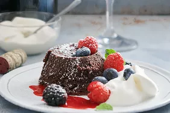

Flourless Chocolate Lava Cake

Prep Time:
15 minutes
Cook Time:
12 minutes
Total Time:
27 minutes
Servings:
2 servings
Ingredients
- 1/2 cup unsalted butter
- 1 cup semisweet chocolate chips
- 2 large eggs
- 1/4 cup granulated sugar
- 1 teaspoon vanilla extract
- 1/4 teaspoon salt
- 2 tablespoons cocoa powder (for dusting)
Directions
-
Preheat the oven to 425°F (220°C). Grease two ramekins with butter and
dust with cocoa powder.
-
In a microwave-safe bowl, melt the butter and chocolate chips together
in 30-second intervals, stirring until smooth.
-
In a separate bowl, whisk together the eggs, sugar, vanilla extract, and
salt until well combined.
-
Pour the melted chocolate mixture into the egg mixture and stir until
fully incorporated.
- Divide the batter evenly between the prepared ramekins.
-
Bake for 12 minutes or until the edges are set but the center is still
soft.
-
Let cool for 1 minute, then carefully invert onto plates. Serve
immediately with ice cream or whipped cream.
Enjoy your delicious Flourless Chocolate Lava Cake!